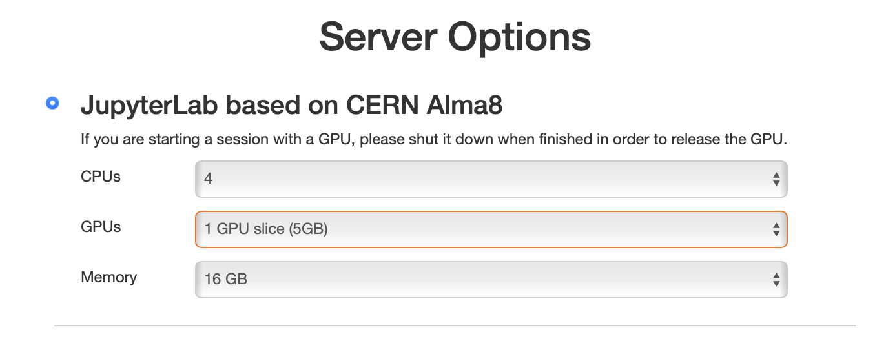

GPU access¶
Graphics processing units (GPUs) are specialized processors that can dramatically accelerate execution of parallelizable algorithms.
The most common use cases for GPUs in high energy physics are training and inference of machine learning models, however there are other frameworks and algorithms optimized to run on GPUs.
Purdue AF also allows to use GPUs to accelerate RooFit fits, see more info here.
How to access GPUs at Purdue AF¶
-
Direct connection
At Purdue AF, you can start a session with an interactive access to an Nvidia A100 GPU. To achieve that, select a GPU when creating a session (see screenshot below). You will have a choice of either a 5GB "slice" of A100, or a full 40GB A100.

Note
If you selected a GPU, your session will have
CUDA 12.4andcudnn 8.9.7.29libraries loaded. Take this into account if you need to install particular versions of ML libraries such astensorflow- these libraries are notoriously sensitive to CUDA version.Important
Please terminate your session after using a GPU in order to release the GPU for other users.
-
Submit Slurm jobs (Purdue users only)
You can use Slurm to submit multiple GPU jobs to run in parallel. To request a GPU for a Slurm job, simply add
--gpus-per-node=1argument tosbatchcommand.-
The Slurm jobs submitted directly from the Purdue AF inteface are executed at the Hammer cluster, which features 22 nodes with Nvidia T4 GPUs.
-
If you need more GPUs, or different GPU models, you may consider submitting Slurm jobs at Gilbreth cluster. To log in to Gilbreth cluster directly from the Purdue AF interface, simply run command
ssh gilbrethand use BoilerKey two-factor authentication. Once you have logged in, you can use Slurm queues on Gilbreth cluster to run GPU jobs.Important
The
onlystorage volume shared between Purdue AF and the Gilbreth cluster is/depot/; consider saving the outputs of your jobs there.
-
GPU support in common ML libraries¶
-
Tensorflow:
-
Install
tensorflow[and-cuda]usingpip(this is already done for pre-installed kernels). -
Learn how to use Tensorflow with GPUs: Tensorflow GPU guide.
-
-
Pytorch:
Does not require any special installation, as long as its version supports
CUDA 12.4andcudnn 8.9.x(this is already true for pre-installed kernels). -
XGBoost:
You can enable GPU support in XGBoost by specifying the
deviceparameter ascuda. Please refer to the XGBoost GPU documentation for more details.
If you experience any issues, or missing any ML libraries, please contact Purdue AF support.